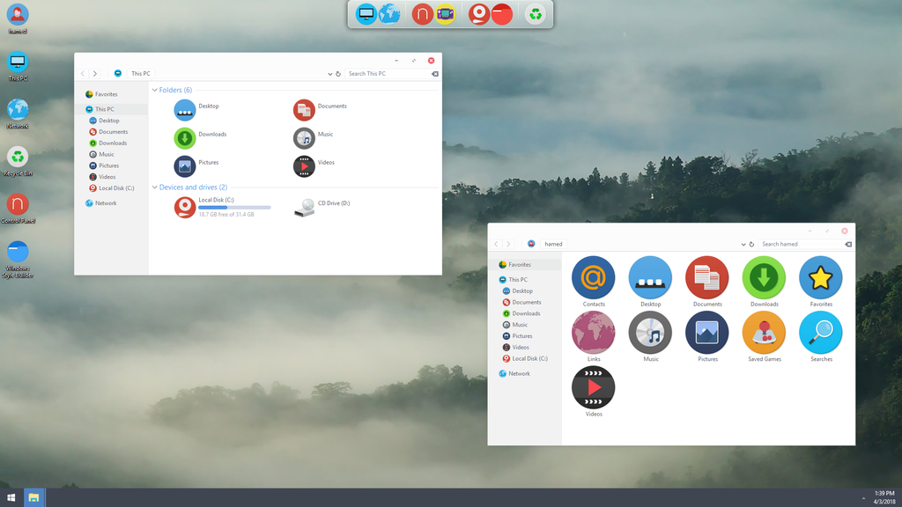
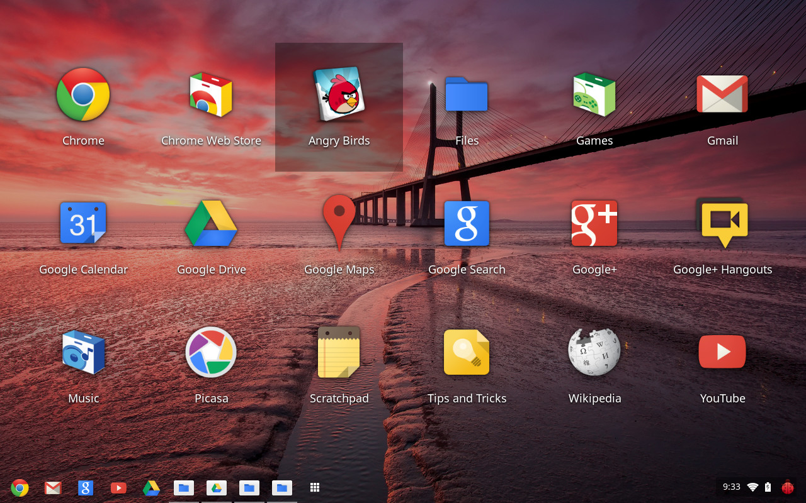

Содержание
Fuchsia — операционная система, разрабатываемая корпорацией Google.
Впервые была обнаружена на GitHub в августе 2016 года без каких-либо официальных объявлений со стороны Google. В отличие от предыдущих развиваемых Google операционных систем, таких как Chrome OS и Android, которые основаны на ядре Linux, Fuchsia базируется на новом микроядре под названием «Zircon», производном от «Little Kernel», и является небольшой ОС, предназначенной для встраиваемых систем, разработанная Трэвисом Гейсельбрехтом, создателем ядра NewOS. После проверки средства массовой информации отметили, что код в GitHub предполагает возможность работы Fuchsia на универсальных устройствах, от встроенных систем до смартфонов, планшетов и персональных компьютеров. В мае 2017 года Fuchsia была обновлена пользовательским интерфейсом, а разработчик написал, что проект не был «мёртвой свалкой», что вызвало спекуляции в СМИ о намерениях Google в отношении этой операционной системы, включая возможность замены Android.
Распространяется как свободное и открытое программное обеспечение, с лицензиями, включая BSD 3, MIT и Apache 2.0.
История
В августе 2016 года средства массовой информации сообщили о таинственной записи кодовой базы, опубликованной в GitHub, которая показала, что Google разрабатывает новую операционную систему под названием «Fuchsia». Несмотря на то, что официальное объявление не было сделано, проверка кода предложила возможность работать на универсальных устройствах, в том числе «интеллектуальные информационные системы для автомобилей», встроенные устройства, такие как светофоры и цифровые часы, вплоть до смартфонов, планшетов и ПК". Код отличается от Android и Chrome OS тем, что он основан на ядре Zircon (ранее «Magenta»), а не на ядре Linux
В мае 2017 года в Ars Technica сообщено о новом пользовательском интерфейсе Fuchsia, об обновлении от интерфейса командной строки при первом открытии в августе, а также о разработчике, написавшем, что Fuchsia «не игрушечная штука, это не 20%-ный проект, это не свалка мёртвых вещей, о которой мы больше не заботимся». Несколько блогов писали о том, что казалось бы, в близких связях с Android, Fuchsia может попытаться заменить Android, таким образом устраняя проблемы на этой платформе
В ноябре 2017 года была начата первоначальная поддержка языка программирования Swift
В январе 2018 года Google выложила код системы в сеть. В апреле 2018 года сторонними разработчиками было выложено веб-демо, симулирующее интерфейс Fuchsia OS
В мае 2021 года сотрудники Google подтвердили, что впервые внедрили Fuchsia на потребительском рынке в рамках обновления программного обеспечения для Google Nest Hub первого поколения, которое заменяет существующее программное обеспечение на базе Chromecast. Обновление не содержит изменений в программном обеспечении или пользовательском интерфейсе устройства, ориентированных на пользователя.
Особенности
Пользовательский интерфейс и приложения Fuchsia написаны с помощью комплекта для разработки мобильных приложений Flutter, использующего язык Dart. Flutter также предлагает движок рендеринга на основе Vulkan под названием «Escher» с особой поддержкой «объёмных мягких теней», который Ars Technica описал как «специально созданный для работы с теневыми текстурами Material Design».
Благодаря комплекту разработки программного обеспечения Flutter, предлагающему кросс-платформенные возможности, пользователи могут устанавливать части Fuchsia на устройствах Android. Блог Ars Technica отметил, что, хотя пользователи могут тестировать Fuchsia, ничего «не работает», добавив, что «это всё связка интерфейсов-заполнителей, которые ничего не делают», хотя и обнаруживают значительное сходство между интерфейсом Fuchsia и Android, включая экран последних приложений, меню «Настройки» и разделённое изображение для одновременного просмотра нескольких приложений.
Во втором обзоре, вышедшем в январе 2018 года в Ars Technica, автор был впечатлён прогрессом, отметив полную работоспособность приложений, и был особенно доволен поддержкой аппаратного обеспечения. Среди положительных возможностей он отметил поддержку нескольких указателей мыши.
Обзор

Fuchsia - это новая операционная система с открытым исходным кодом, созданная в Google, которая в настоящее время находится в стадии активной разработки.Fuchsia строится от ядра до потребностей растущей сегодня экосистемы подключенных устройств.
Операционная система все еще быстро развивается, но основные принципы и ценности системы оставались относительно неизменными на протяжении всего проекта. Основными архитектурными принципами, лежащими в основе проектирования и разработки Fuchsia, являются: безопасность, обновляемость, инклюзивность и прагматичность.
Ссылки
- Репозиторий: fuchsia.googlesource.com